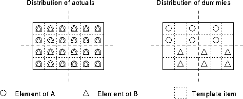

Assuming that Zubbie is invoked by the CALL statement given on the previous slide, the two diagrams show how the actual arguments, A and B, are aligned at the call site and how the two corresponding dummy arguments, X and Y, are aligned in the procedure. It can be seen that A and B are such that element A(i,j) is aligned with B(i,j). It is perhaps best to view both A and B as being aligned to a conformable template.
The only way that the alignment of x and y can be described is by reconstructing this template and then explicitly aligning X and Y in exactly the same way as the two actual arguments were. In other words, we must calculate the alignment, with respect to the template, of the subsections of A and B that were used as arguments to Zubbie.

Figure 40: Visualisation of Distribution of Actual and Dummy Arguments
thus to prevent remapping, the procedure should be:
SUBROUTINE Zubbie(x,y,z)
!HPF$ TEMPLATE, DIMENSION(4,6) :: T
!HPF$ PROCESSORS, DIMENSION(2,2) :: P
REAL, INTENT(INOUT), DIMENSION(:,:) :: x, y
REAL, INTENT(INOUT), DIMENSION(:,:) :: z
!HPF$ ALIGN (:,:) WITH *T(:,::2) :: x, z
!HPF$ ALIGN (:,:) WITH *T(3:,2::2) :: y
!HPF$ DISTRIBUTE *(BLOCK,BLOCK) ONTO *P :: T
...
It can be seen that the alignment given in the procedure corresponds to the layout in the second diagram. By using the original template, we have been able to reconstruct the relative alignment of the dummies.
There is one large problem with this approach; what happens if Zubbie is invoked with different sections of A and B such as
CALL Zubbie(A(3:4,::2),B(1:2,2::2),Res)
Clearly, our carefully constructed alignment is no longer valid and, if it were used, would result in data remapping. If this approach is adopted then a separate subroutine for each invocation must be written. We get into even deeper water if the sectioning of A or B is performed by variables instead of literals.
It may be a good idea to only pass whole objects to procedures!
Note that the use of a module to hold the PROCESSORS and TEMPLATE declarations and the distribution of the template would simplify matters here.